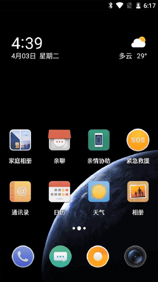
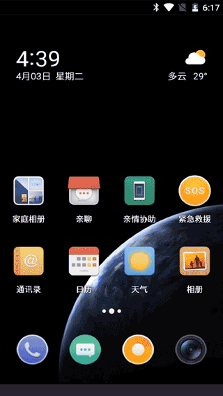

健康屏
V1S手机您的专属健康守门人，负一屏的健康屏，共包含一键看医生/专家挂号/病例档案/健康检测四项服务。小病线上问诊，处方开药，送药上门实现全流程服务闭环；大病线上挂号，名医推荐，轻松解决看病难问题。另外还有健康检测数据归档，异常数据监测回访等贴心服务。
播放功能讲解视频
详细分步骤讲解


线上问诊操作：健康屏>一键看医生>选择问题类型>链接就近家庭医生服务基地
（长按手机健康键 2 秒也可进行一键看医生）

病例档案查看：健康屏>病例档案

健康检测：健康屏>健康简报>仪器图标（或设备中心）>绑定手环（其他仪器自动连接最近设备）>健康测量

病例档案查看：健康屏>病例档案